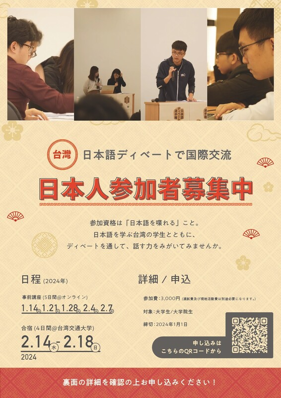

<section class="section" style="border-bottom:none;">
	<div class="container">
		<div class="section-head">
			<span class="eyebrow">2024</span>
			<h2>日語辯論營暨全國日本語辯論錦標賽</h2>
		</div>

		<div class="gallery" style="max-width:400px;">
			<a class="gallery-item" href="assets/img/uploads/404763451-859287629323764-9023497149846634984-n_orig.jpg"></a>
		</div>

		<div class="page-prose">
			<h3>獲勝隊伍</h3>
			<p><strong>冠軍｜Ｆチーム</strong><br>
			王紹倫（陽明交大 醫學系）／呂晟愷（陽明交大 資訊工程學系）／張喆（陽明交大 土木工程學系）／王斌（陽明交大 材料科學與工程學系）／賴亮筑（東吳大學 日本語文學系）</p>
			<p><strong>亞軍｜Ｂチーム</strong><br>
			黃少芃（陽明交大 工業工程與管理學系）／王宥云（陽明交大 電子物理研究所）／唐國維（陽明交大 電機研究所）／許瑞祥（中央大學 機械工程學系）／何馨心（東吳大學 日本語文學系）</p>
			<p><strong>最佳辯士獎</strong><br>
			何馨心（東吳大學 日本語文學系）</p>
			<p><strong>辯士獎</strong><br>
			黄得誠（陽明交大 資訊工程學系）／何馨心（東吳大學日本語文學系）／呂晟愷（陽明交大 資訊工程學系）／黃少芃（陽明交大 工業工程與管理學系）／江嘉紘（陽明交大 生物科技學系）</p>
			<p><strong>特別獎</strong><br>
			曾靖嵐（東吳大學 日本語文學系）／魏子翔（陽明交大 電子研究所）／孫颯馬（中央大學 機械系）／許瑞祥（中央大學 機械系）／江嘉紘（陽明交大 生物科技學系）／謝惠蓁（高雄科技大學 應用日語系）／張程翔（陽明交大 資訊工程學系）／陳薪富（高雄科技大學 應用日語系）</p>
		</div>

		<div class="page-prose" style="margin-top:48px;padding-top:32px;border-top:1px solid var(--color-line);">
			<h3>活動目的</h3>
			<p>語言能力在職場上非常重要，具備良好的語言能力可以更輕鬆的征戰職場。本次活動旨在增進參加者的日語能力以及用日語思考的能力，並且藉由辯論提高參加者的邏輯思考，資料查找能力。另外，透過日語辯論，傾聽能力、統整能力、口頭發表能力、以及提升說話的說服力等等能力都將獲得巨大的提升。並且可以讓日本人以及台灣人進行文化交流，學習不同的文化。</p>
			<p>以「辯論」形式練習日文——不知道如何下手練習口說、寫作嗎？辯論就是最佳的形式！</p>
			<ul>
				<li>說不出來、詞不達意？辯論使用半成稿、有一定格式可遵循，能幫助你有效率的系統練習</li>
				<li>不知道要說什麼/找不到人練習：提供題材與對手</li>
				<li>除了主講師外，每組會安排助教，不用怕跟不上</li>
			</ul>
			<p>與日本人組隊交流、拓展國際觀——本活動同時在日方舉辦，除了有經驗豐富的日籍老師外，更有許多日本學員！分組採混編方式，一起來跟日本人盡情聊天吧！</p>
			<p>報名人數上限：40 人</p>
		</div>

		<div class="page-prose" style="margin-top:48px;padding-top:32px;border-top:1px solid var(--color-line);">
			<h3>比賽題目</h3>
			<p><strong>日本是否該引入對假釋者的電子監視制度</strong><br>
			テーマは、日本の「日本は仮釈放の者に対する電子監視制度を導入すべきである。是か否か。」。台湾人学生との混合チームを作り、スマートフォン使用などについての簡単なディスカッションやゲームを楽しみます。</p>

			<h3>活動時程</h3>
			<p><strong>線上 Program</strong><br>
			2024/1/14（日）台灣時間 13:00～15:00　線上 Program（1）<br>
			2024/1/21（日）台灣時間 13:00～15:00　線上 Program（2）<br>
			2024/1/28（日）台灣時間 13:00～15:00　線上 Program（3）<br>
			2024/2/4（日）台灣時間 13:00～15:00　線上 Program（4）<br>
			2024/2/7（三）台灣時間 13:00～15:00　線上 Program（5）</p>
			<p><strong>實體 Program</strong>：新竹市東區大學路 1001 號　陽明交通大學光復校區　綜合一館<br>
			2024/2/14（三）前夜祭（welcome party）<br>
			2024/2/15（五）上午：日語辯論教學／下午：自由活動時間<br>
			2024/2/16（六）上午：日語辯論教學／下午：自由活動時間<br>
			2024/2/17（日）上午：日語辯論教學／下午：自由活動時間<br>
			2024/2/18（三）辯論體驗</p>

			<h3>辯論流程</h3>
			<p><u>第一パート</u><br>
			肯定側立論(4分鐘)→準備(5分鐘)→否定側質疑(3分鐘)→準備(2分鐘)→否定側反駁(2分鐘)→準備(2分鐘)→肯定側再反駁(2分鐘)</p>
			<p><u>第二パート</u><br>
			否定側立論(4分鐘)→準備(5分鐘)→肯定側質疑(3分鐘)→準備(2分鐘)→肯定側反駁(2分鐘)→準備(2分鐘)→否定側再反駁(2分鐘)</p>
			<p><u>第三パート</u><br>
			準備(5分鐘)→否定側総括(3分鐘)→肯定側総括(3分鐘)（總計：51分鐘）</p>
		</div>

		<div class="page-prose" style="margin-top:48px;padding-top:32px;border-top:1px solid var(--color-line);">
			<h3>常見問題</h3>
			<p><strong>Q1：ディベート経験がないので、ついていけるか心配です。</strong><br>A1：初心者向けのプログラムです。グループごとに経験者やTAを配置しますので、心配ありません！</p>
			<p><strong>Q2：高校生ですが参加できますか。</strong><br>A2：基本的に大学生を対象としていますが、過去には参加を認められた場合もありますので、まずは、お問い合わせください。</p>
			<p><strong>Q3：日本人ではありませんが参加できますか</strong><br>A3：もちろん、日本語でのプログラムに参加できるなら、大歓迎です。</p>
			<p><strong>Q4：中国語が話せませんが、現地の滞在に不安があります。</strong><br>A4：日本語のプログラムですので、心配しないでください。英語でのコミュニケーションもできます。</p>
			<p><strong>Q5：深く国際交流したいのですが。</strong><br>A5：台湾側の交流チームと企画、運営をする人を募集しています。興味ある方はお問い合わせください。</p>
			<p><strong>Q6：参加費の支払い方法は何ですか？</strong><br>A6：銀行口座への振り込みか、linepayです。合宿プログラム参加の方は現地払いもできます。お申し込みフォームに記入いただいた方に順次、振り込み先のご案内をいたします。</p>
			<p><strong>Q7：オンライン参加の場合、グループでの自由時間はどうなりますか？</strong><br>A7：グループによって活動内容が違います。討論などをするグループもありますが、地元観光などはオンライン参加の方は参加できません。ご了承ください。</p>
			<p><strong>Q8：台湾合宿に参加するメリットはなんですか？</strong><br>A8：交流のための自由時間を設けており、現地の学生たちと観光やグルメ、買い物も楽しめます。台湾の文化を実際に体験することで、深く異文化交流を体験できます。プログラム中は、台湾の有名校・陽明交通大学の生活を体験できます。隣接している科学園区（台湾のシリコンバレー）にはTSMC本社があり、見学することもできます。また、現地の学生たちと観光ツアーも計画しています。</p>
			<p><strong>Q9：合宿の集合場所はどこですか？</strong><br>A9：現地集合、現地解散のプログラムです。台湾・陽明交通大学での現地集合になります。交通費等は自分で手配してください。空港から陽明交通大学までの移動は空港リムジンバスが便利です。</p>
			<p><strong>Q10：他の参加者と一緒に台湾に行くことができますか。</strong><br>A10：現地集合、現地解散のプログラムですが、日本からの講師と同じフライトでしたら、一緒に行くことができます。</p>
			<p><strong>Q11：合宿中の食事について教えてください。</strong><br>A11：校内、学校の付近に食事するところがあります。是非、現地の食文化を体験してください。現地の学生たちの平均は一食100元ほどです。</p>
			<p><strong>Q12：合宿中の宿泊について教えてください。</strong><br>A12：講師を含め、隣接する施設のゲストハウスを手配します。希望者には手配のお手伝いをします。1泊700元（ツインで一人分の料金）です。ゲストハウスにはコインランドリーがあります。</p>
			<p><strong>Q13：台湾へ行くには、何か注意事項がありますか？</strong><br>A13：日本台湾交流協会のウェブサイトの COVID-19 情報を参考にしてください。<a href="https://www.koryu.or.jp/" target="_blank" rel="noopener">https://www.koryu.or.jp/</a></p>
			<p><strong>Q14：台湾元はどこで両替できますか。</strong><br>A14：日本の銀行でも対応しているところがあります。また、空港でもできます。現地でもできますが、連休中のため、銀行が開いていませんので、注意してください。</p>
			<p><strong>Q15：合宿プログラムには参加しなくてもいいですか。</strong><br>A15：はい。オンラインプログラムで最終日まで参加できます。</p>
		</div>

		<div class="page-prose" style="margin-top:48px;padding-top:32px;border-top:1px solid var(--color-line);">
			<h3>指導老師</h3>
			<p>酒賀えり（クランポンスクール株式会社）<br>
			川下大響（東京大学大学院総合文化研究科修士課程）<br>
			久島玲（東京大学大学院教育学研究科博士課程）<br>
			邱佳詮（國立陽明交通大學電機學院博士班）<br>
			趙唐（東京工業大学情報通信系博士後期課程）</p>
		</div>

		<div class="page-prose" style="margin-top:48px;padding-top:32px;border-top:1px solid var(--color-line);">
			<h3>參與學校</h3>
			<p><strong>臺灣</strong><br>
			東吳大學、國立中央大學、國立高雄科技大學、國立清華大學、國立高雄師範大學、國立陽明交通大學</p>
			<p><strong>日本</strong><br>
			中央大学、千葉大学、金沢大学、九州大学、熊本県立大学、熊本大学</p>

			<h3>協辦單位</h3>
			<p>臺灣交通大學校友總會</p>

			<h3>指導單位</h3>
			<p>外交部</p>
		</div>
	</div>
</section>
